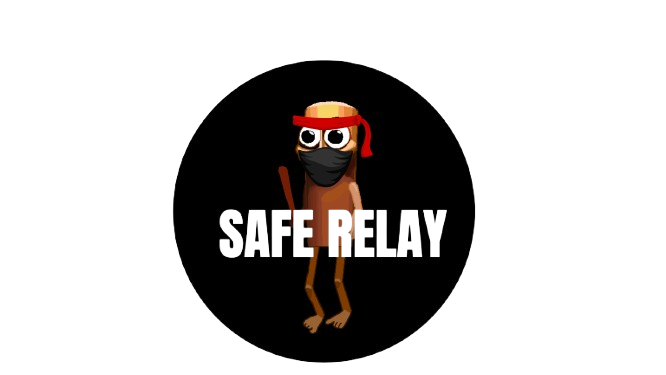

A quiet way to know a shipment is still moving — without ever showing anyone where it is.
Because of the conflict, air and sea access for humanitarian transfers has been closed or is no longer available, making land corridors the practical routes for bringing aid into Iran.
These corridors carry critical supplies such as medicine and food, but they create two major challenges: security and connectivity.
Traditional GPS tracking cannot safely be used, because continuously revealing the convoy's location could expose it to hostile actors. At the same time, network connectivity along these routes can be extremely weak or unreliable.
This creates logistical blindness. Humanitarian teams may know that a shipment is late, but they cannot reliably know whether it is still moving, or when it is likely to arrive.
How can we provide useful delivery information without exposing the convoy's location, or depending on continuous internet?
Reza is a humanitarian aid volunteer working a drop-off zone along the Turkey and Central Asian corridors into Iran. Her rural district has almost no signal — a bar, if she's lucky, gone as quickly as it came. Over 100 families and patients are depending on the medicine she's there to receive.
All she has is word that a truck is due by 5 PM.
That gap between 5 and 8 o'clock is the whole problem. Safe Relay doesn't try to show anyone where the truck is — it just gives Reza one honest thing to watch while she waits.
Safe Relay bypasses the need for continuous internet or live GPS tracking by combining satellite observation, human verification, and edge intelligence.
The UN funds a dedicated satellite exclusively for humanitarian aid shipments. This satellite captures current imagery of the Turkey Corridor, Azerbaijan, Tajikistan, and Uzbekistan. The Central Hub AI then analyzes possible routes based on these captures.
The AI-analyzed routes are sent to human experts to verify safety and viability. Once verified, the Command Center disseminates route guidelines and instructions down to the drivers.
The driver interacts with a simple interface on their device. It does not need an internet connection or GPS to function; it operates completely offline. When passing checkpoints or milestones, the driver simply taps a button.
When the driver taps the button, the device transmits just 1 byte of signal (requiring at least a momentary signal snippet) through to the Central Hub AI. Embedded directly within the volunteer application, Edge AI processes this minimal transmission locally to compute and display a reliable ETA directly on the volunteer's phone.
When evaluating logistics tools for conflict regions like the Iran corridors, we benchmark our approach against the World Food Programme's **RITA (Relief Item Tracking Application)** — the global standard for tracking humanitarian cargo.
| Feature / Metric | Existing Standard (WFP RITA) | Safe Relay (Our System) |
|---|---|---|
| Main Purpose | Track humanitarian cargo across logistics nodes | Track medicine deliveries safely during active conflict |
| Connectivity | Internet-based operation | Offline-first design with minimal check-ins |
| GPS & Security | Standard location/node logging | Deliberately avoids continuous GPS exposure |
| Arrival Estimation | Standard Expected Arrival Date field | AI-generated ETA window and corridor safety analysis |
| End Beneficiaries | Restricted to logistics operators and agencies | Provides simple arrival updates to local volunteers without requiring accounts |
Traditional tools like RITA rely on continuous internet connectivity and administrative visibility from entry points to extended delivery points. However, in active conflict zones, that constant data stream creates major security vulnerabilities.
Safe Relay shifts the paradigm: instead of broadcasting where a truck is, it uses minimal check-ins and AI prediction to confirm that it is moving safely—bridging the gap for local volunteers without putting convoys at risk.